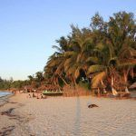
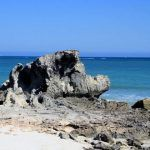
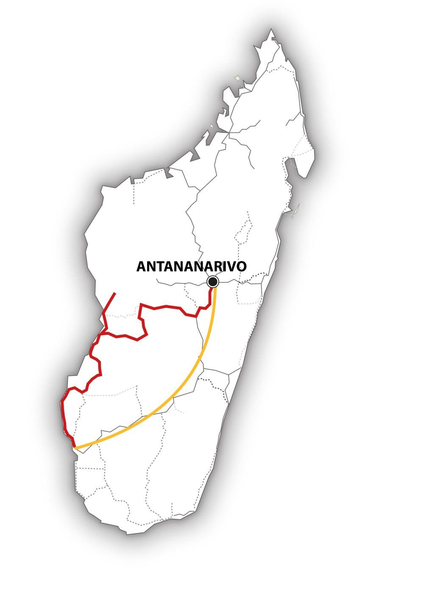

Madagascar – L’essentiel de l’Ouest ! – MG120
Après avoir traversé les Hauts-Plateaux malgaches, cap sur la Côte Ouest de Madagascar, si diversifiée…
Nous marchons dans les exceptionnelles sculptures en pierre calcaire des Tsingy, émerveillés par les baobabs géants et les nombreux animaux endémiques : le Fosa – cette civette rare -, les lémuriens de Madagascar, ou encore les caméléons, bien camouflés le long du chemin…
Une visite intense des points forts de l’Ouest de Madagascar nous attend, riche en expériences et découvertes passionnantes !

-

-

MG120 : Madagascar L’essentiel de l’Ouest !
L’essentiel : 
• Toujours plus à l’Ouest !
• Exploration approfondie des impressionnants Tsingy
• La nature malgache et ses incroyables lémuriens
• Villages de pêcheurs et plages de rêve désertes à l’infini
Période :
Ce circuit est réalisable de juin à octobre.
Itinéraire :
Antananarivo – Antsirabe – Morondava – Tsingy de Bemaraha – Kirindy – Morondava – Manja – Morombe – Tuléar – Antananarivo
Caractéristiques du circuit :
Région : Hauts-Plateaux, Ouest, Sud-Ouest
Contenu : nature, traversées en bac, plage
Condition physique . moyenne
Tous les détails de ce voyage au format PDF
Jour 1 : Vol depuis la Suisse
Tonga Soa ! Nous atterrissons tard le soir à l’aéroport d’Antananarivo et nous réjouissons de rejoindre notre hôtel du centre-ville.
Jour 2 : Antananarivo – Antsirabe
Aujourd’hui, départ en direction du sud, au travers des Hauts-Plateaux de Madagascar. Arrêt à Ambatolampy, la ville d’où proviennent les casseroles en aluminium recyclé, utilisées partout dans l’île. Puis voici Antsirabe, fondée par des missionnaires norvégiens, et ses nombreuses églises. Antsirabe est également réputée pour ses artisans et marchands de pierres précieuses.
Jour 3 : Antsirabe
Sortons de la ville pour rejoindre le lac Andraikiba. Ce lac de cratère, au milieu de la zone fertile et volcanique des environs d’Antsirabe, est une destination d’excursion et de baignade très prisée des Malgaches.
Jour 4 : Antsirabe – Miandrivazo
Notre voyage se poursuit à travers le paysage volcanique verdoyant et puis arrivent les contreforts des massifs de l’Ankaratra et de l’Itremo. Dans l’après-midi, nous atteignons la petite ville pittoresque de Miandrivazo. Elle s’étale le long d’une large vallée où l’on produit du tabac, tandis que la vie tourne autour du fleuve Mahajilo.
Jours 5 : Miandrivazo – Morondava
Par la route, nous suivons le fleuve jusqu’à atteindre Mahabo. Cet endroit, aujourd’hui méconnu, était autrefois la capitale du Royaume Sakalava. Agrumes, arachides ou encore tabac et canne à sucre sont produits dans la région. Le soir, nous découvrons la mer à Morondava.
Jour 6 : Morondava – Tsingy de Bemaraha
De Morondava, nous partons vers l’intérieur des terres en direction du Nord, sur des pistes sablonneuses traversant des villages isolés. Nous franchissons la rivière Tsiribihina sur un bac, pour rejoindre Belo sur Tsiribihina. Après un second passage à bord d’un bac, nous voici arrivés au village de Bekopaka, à l’entrée du Parc.
Jour 7-8 : Tsingy de Bemaraha
Deux jours durant, nous allons profiter de l’un des paysages les plus étranges de Madagascar : gorges, pics calcaires aux formes bizarres et vertigineuses- jusqu’à 40 mètres de hauteur ! – gouffres gigantesques, lacs souterrains et cours d’eau étroits… Nous effectuons des randonnées dans la forêt et dans les Tsingy. Depuis un pont suspendu, nous jouissons d’une vue panoramique époustouflante sur ce microcosme de pierre…
Jour 9 : Tsingy de Bemaraha – Kirindy
Cap sur la forêt sèche de Kirindy ! Sur notre route, nous pouvons apercevoir les lémurs à front roux méridional (Eulemur rufifrons) ou peut-être même le rare Fosa, une sorte de petite mangouste.
Jour 10 : Kirindy – Morondava
Nous profitons de la journée pour explorer un autre secteur de la forêt Kirindy et découvrons son écosystème particulier : bois précieux tels le palissandre et l’ébène, les baobabs et de nombreuses plantes médicinales. A midi, départ pour Morondava et sa fameuse Allée des Baobabs : un paysage spectaculaire lorsque leurs ombres gigantesques se découpent sur le ciel enflammé par le soleil couchant… L’une des photos les plus populaires de Madagascar…
Jour 11 : Morondava – Belo sur Mer
Le voyage se poursuit le long de la côte en direction du sud, jusqu’à la paisible ville côtière de Belo sur Mer. Nous pouvons nous baigner, ou observer le travail des artisans, qui, à l’aide d’outils traditionnels, construisent des cargos en bois, qui, toutes voiles dehors, iront plus tard sillonner le Canal du Mozambique.
Jour 12 : Belo sur Mer – Manja
Dans le paysage aride de l’Ouest, nous traversons de vastes savanes sans fin, et découvrons des villages où le temps semble s’être arrêté. Notre circuit nous conduit au tranquille village de Manja, célèbre pour son marché à bétail.
Jour 13 : Manja – Morombe
Le long de la plaine peu profonde du delta de la rivière Mangoky, nous nous dirigeons vers la ville côtière de Morombe et ses bateaux de pêche colorés. Nos compagnons de route sont les forêts d’épineux et des baobabs plissés comme de vieilles barriques.
Jour 14 : Morombe – Andavadoaka
Notre voyage se poursuit le long d’une Côte Ouest à couper le souffle : bleu profond de la mer, blanc des lagunes de sel, vert des mangroves et des forêts d’épineux. Un spectacle majestueux et inoubliable…
Jour 15 : Andavadoaka – Ifaty
Nous continuons notre route à travers un paysage étrange, entre mer et savane, et traversons de nombreux villages de pêcheurs Vezo avant de rejoindre Ifaty.
Jour 16 : Ifaty
Ifaty et ses plages nous invitent à la baignade ou à la plongée. Nous pouvons également observer les oiseaux dans la forêt environnante ou visiter le village des tortues.
Jour 17 : Ifaty – Tuléar – Antananarivo
Après un petit-déjeuner avec vue sur la mer, départ pour Tuléar où nous prenons notre avion pour Tana.
Jour 18 : Antananarivo
Tana nous invite une dernière fois à goûter de ses charmes : dernières emplettes, ou une ultime dégustation de viande de zébu, avant d’aller à l’aéroport le soir.
Jour 19 : Vol de retour
Notre avion décolle après minuit. Veloma !